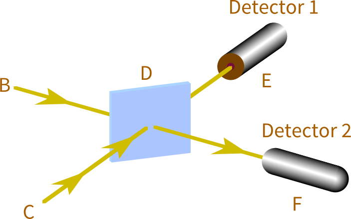

Joint Configurations
❦
The key to understanding configurations, and hence the key to understanding quantum mechanics, is realizing on a truly gut level that configurations are about more than one particle.

Figure 1
Continuing from the previous essay, Figure 1 shows an altered version of the experiment where we send in two photons toward D at the same time, from the sources B and C.
The starting configuration then is:
“a photon going from B to D,
and a photon going from C to D.”
Again, let’s say the starting configuration has amplitude (−1 + 0i).
And remember, the rule of the half-silvered mirror (at D) is that a right-angle deflection multiplies by i, and a straight line multiplies by 1.
So the amplitude flows from the starting configuration, separately considering the four cases of deflection/non-deflection of each photon, are:
- The “B to D” photon is deflected and the “C to D” photon is deflected. This amplitude flows to the configuration “a photon going from D to E, and a photon going from D to F.” The amplitude flowing is (−1 + 0i) × i × i = (1 + 0i).
- The “B to D” photon is deflected and the “C to D” photon goes straight. This amplitude flows to the configuration “two photons going from D to E.” The amplitude flowing is (−1 + 0i) × i × 1 = (0 − i).
- The “B to D” photon goes straight and the “C to D” photon is deflected. This amplitude flows to the configuration “two photons going from D to F.” The amplitude flowing is (−1 + 0i) × 1 × i = (0 − i).
- The “B to D” photon goes straight and the “C to D” photon goes straight. This amplitude flows to the configuration “a photon going from D to F, and a photon going from D to E.” The amplitude flowing is (−1 + 0i) × 1 × 1 = (−1 + 0i).
Now—and this is a very important and fundamental idea in quantum mechanics—the amplitudes in cases 1 and 4 are flowing to the same configuration. Whether the B photon and C photon both go straight, or both are deflected, the resulting configuration is one photon going toward E and another photon going toward F.
So we add up the two incoming amplitude flows from case 1 and case 4, and get a total amplitude of (1 + 0i) + (−1 + 0i) = 0.
When we wave our magic squared-modulus-ratio reader over the three final configurations, we’ll find that “two photons at Detector 1” and “two photons at Detector 2” have the same squared modulus, but “a photon at Detector 1 and a photon at Detector 2” has squared modulus zero.
Way up at the level of experiment, we never find Detector 1 and Detector 2 both going off. We’ll find Detector 1 going off twice, or Detector 2 going off twice, with equal frequency. (Assuming I’ve gotten the math and physics right. I didn’t actually perform the experiment.)
The configuration’s identity is not, “the B photon going toward E and the C photon going toward F. ” Then the resultant configurations in case 1 and case 4 would not be equal. Case 1 would be, “B photon to E, C photon to F” and case 4 would be “B photon to F, C photon to E.” These would be two distinguishable configurations, if configurations had photon-tracking structure.
So we would not add up the two amplitudes and cancel them out. We would keep the amplitudes in two separate configurations. The total amplitudes would have non-zero squared moduli. And when we ran the experiment, we would find (around half the time) that Detector 1 and Detector 2 each registered one photon. Which doesn’t happen, if my calculations are correct.
Configurations don’t keep track of where particles come from. A configuration’s identity is just, “a photon here, a photon there; an electron here, an electron there.” No matter how you get into that situation, so long as there are the same species of particles in the same places, it counts as the same configuration.
I say again that the question “What kind of information does the configuration’s structure incorporate?” has experimental consequences. You can deduce, from experiment, the way that reality itself must be treating configurations.
In a classical universe, there would be no experimental consequences. If the photon were like a little billiard ball that either went one way or the other, and the configurations were our beliefs about possible states the system could be in, and instead of amplitudes we had probabilities, it would not make a difference whether we tracked the origin of photons or threw the information away.
In a classical universe, I could assign a 25% probability to both photons going to E, a 25% probability of both photons going to F, a 25% probability of the B photon going to E and the C photon going to F, and 25% probability of the B photon going to F and the C photon going to E. Or, since I personally don’t care which of the two latter cases occurred, I could decide to collapse the two possibilities into one possibility and add up their probabilities, and just say, “a 50% probability that each detector gets one photon.”
With probabilities, we can aggregate events as we like—draw our boundaries around sets of possible worlds as we please—and the numbers will still work out the same. The probability of two mutually exclusive events always equals the probability of the first event plus the probability of the second event.
But you can’t arbitrarily collapse configurations together, or split them apart, in your model, and get the same experimental predictions. Our magical tool tells us the ratios of squared moduli. When you add two complex numbers, the squared modulus of the sum is not the sum of the squared moduli of the parts:
| Squared_Modulus(C1 + C2) | ≠ | Squared_Modulus(C1) |
| + | Squared_Modulus(C2) . |
E.g.:
| S_M((2 + i) + (1 − i)) | = | S_M(3 + 0i) |
| = | 32 + 02 | |
| = | 9 , | |
| S_M(2 + i) + S_M(1 − i) | = | (22 + 12) + (12 + (−1)2) |
| = | (4 + 1) + (1 + 1) | |
| = | 7 . |
Or in the current experiment of discourse, we had flows of (1 + 0i) and (−1 + 0i) cancel out, adding up to 0, whose squared modulus is 0, where the squared modulus of the parts would have been 1 and 1.
If in place of Squared_Modulus, our magical tool was some linear function— any function where F(X + Y) = F(X) + F(Y)—then all the quantumness would instantly vanish and be replaced by a classical physics. (A different classical physics, not the same illusion of classicality we hallucinate from inside the higher levels of organization in our own quantum world.)
If amplitudes were just probabilities, they couldn’t cancel out when flows collided. If configurations were just states of knowledge, you could reorganize them however you liked.
But the configurations are nailed in place, indivisible and unmergeable without changing the laws of physics.
And part of what is nailed is the way that configurations treat multiple particles. A configuration says, “a photon here, a photon there,” not “this photon here, that photon there.” “This photon here, that photon there” does not have a different identity from “that photon here, this photon there.”
The result, visible in today’s experiment, is that you can’t factorize the physics of our universe to be about particles with individual identities.
Part of the reason why humans have trouble coming to grips with perfectly normal quantum physics, is that humans bizarrely keep trying to factor reality into a sum of individually real billiard balls.
Ha ha! Silly humans.